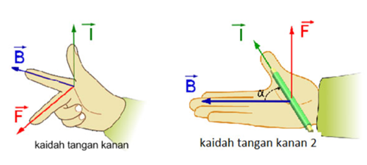

b. Konsep Gaya Lorentz
Gaya lorentz itu sejatinya adalah gabungan dari 2 macam gaya, yakni gaya elektrik dan magnetik pada medan elektromagnetik. Gaya lorentz adalah suatu gaya yang dihasilkan oleh suatu muatan listrik yang bergerak karena arus listrik yang berada pada suatu medan magnet B.
Bila penghantar listrik dialiri oleh aliran listrik lalu penghantar itu terletak di sebuah medan magnetik, maka muncullah sebuah gaya. Yang gaya ini kemudian dinamai dengan Lorentz atau gaya magnetik. Dari sini sudah mengerti?
Menentukan arah gaya Lorenz
Ketika kita belajar mengenai materi satu ini, kita akan sangat akrab dengan istilah arah gaya. Bukan sekadar menghasilkan gaya, tetapi disertai dengan arah pula. Jadi berbeda arah akan berbeda pula makna dari gayanya.
Maka penting untuk menentukan arah dari gaya satu ini. Jadi kamu harus mengetahui cara menentukan arahnya. Lantas, bagaimana cara untuk menentukannya?
Untuk arah arus (I) dan arah medan magnet (B) saling tegak lurus, secara matematis, besarnya gaya Lorentz dituliskan sebagai berikut.
F = B . I . L
Keterangan :
F = gaya Lorentz (newton)
B = medan magnet (tesla)
I = kuat arus listrik (ampere)
L = panjang kawat berarus yang masuk ke dalam medan magnet (meter)
Penentuan arah gaya Lorentz, dapat dilakukan dengan menggunakan kaidah tangan kanan.


Contoh (Klik)
- Sebuah kawat tembaga sepanjang 10 m dialiri arus listrik sebesar 5 mA. Jika kawat tembaga tersebut tegak lurus berada dalam medan magnet sebesar 8 tesla, berapakah gaya Lorentz yang timbul ?
Diketahui:
L = 10 m
I = 5 mA = 0,005 A
B = 8 tesla
Ditanya:
Gaya Lorentz (F)?
Jawab: F = B∙I∙L = 8 tesla. 0,005 A . 10 m = 0,4 N
Jadi, gaya Lorentz yang timbul sebesar 0,4 newton.
- Jika gaya Lorentz yang ditimbulkan oleh kawat tembaga sepanjang 2 m dan dialiri arus listrik sebesar 2 mA adalah 12 N, maka berapakah besar medan magnet yang melingkupi kawat tembaga tersebut?
Diketahui:
L = 2 m
I = 2 mA = 0,002
A = 2 × 10-3 A
F = 12 N
Ditanya:
Medan magnet ?
Jawab:
$F = B.I.L$
$\frac{F}{I . L} = \frac{12 N}{2 \times 10^{-3} A . 2 m } = 3 \times 10^{3}$
Jadi, besarnya medan magnet yang melingkupi kawat tembaga adalah $3 × 10^3$ tesla.
Mari Mencoba
Gunakan ( . ) sebagai koma
1. Sebuah kawat tembaga sepanjang 15 m dialiri arus listrik sebesar 5 mA. Jika kawat tembaga tersebut tegak lurus berada dalam medan magnet sebesar 10 tesla, berapakah gaya Lorentz yang timbul ?
JAWABAN
Jawaban Salah
Sayang sekali. Silahkan pelajari kembali materi di atas dengan penuh semangat.
Jawaban benar
F = B . I . L
Penyelesaian :
F = gaya Lorentz !
B = 10 tesla
I = 5 mA = 0,01 A
L = 15 m
F = 10.0,01.5 = 1,5 N
2. Sebuah kawat tembaga sepanjang 10 m dialiri arus listrik sebesar 4 mA. Jika kawat tembaga tersebut tegak lurus berada dalam medan magnet sebesar 5 tesla, berapakah gaya Lorentz yang timbul ?
JAWABAN
Jawaban Salah
Sayang sekali. Silahkan pelajari kembali materi di atas dengan penuh semangat.
Jawaban benar
F = B . I . L
Penyelesaian :
F = gaya Lorentz !
B = 5 tesla
I = 4 mA = 0,01 A
L = 10 m
F = 5 . 0,004 . 10 = 0,2 N
3. Jika gaya Lorentz yang ditimbulkan oleh kawat tembaga sepanjang 4 m dan dialiri arus listrik sebesar 4 mA adalah 16 N, maka berapakah besar medan magnet yang melingkupi kawat tembaga tersebut?
JAWABAN
Jawaban Salah
Sayang sekali. Silahkan pelajari kembali materi di atas dengan penuh semangat.
Jawaban benar
Diketahui:
L = 4 m
I = 4 mA = 0,004 A
F = 16 N
Ditanya:
Medan magnet ?
Jawab:
$F = B.I.L$
$\frac{F}{I . L} = \frac{16 N}{2 \times 10^{-3} A . 4 m } = 2 \times 10^{3}$
Jadi, besarnya medan magnet yang melingkupi kawat tembaga adalah $2 × 10^3$ tesla.